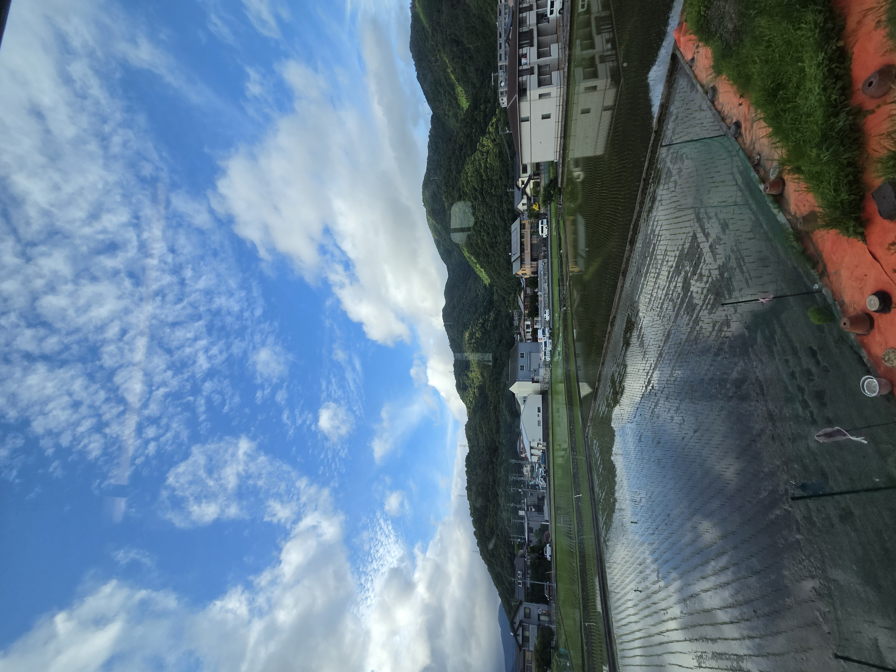

- トップ >
- 暇つぶしチャレンジ
暇つぶしチャレンジ
暇な時間を埋めるために、１週間何かを続けてみようチャレンジ～！です。 内容は、月１ごとにお題を決め、１週間の間毎日そのお題に取り組み思ったことを呟いていく、というものです。三日坊主なので、ゆる～くいきたいと思います。
更新スケジュール：月１回更新。
何とかチャレンジ～！

一日目～！！
暇な時間を埋めるために、１週間何かを続けてみようチャレンジ～！です。 内容は、月１ごとにお題を決め、１週間の間毎日そのお題に取り組み思ったことを呟いていく、というものです。三日坊主なので、ゆる～くいきたいと思います。
更新スケジュール：月１回更新。

一日目～！！